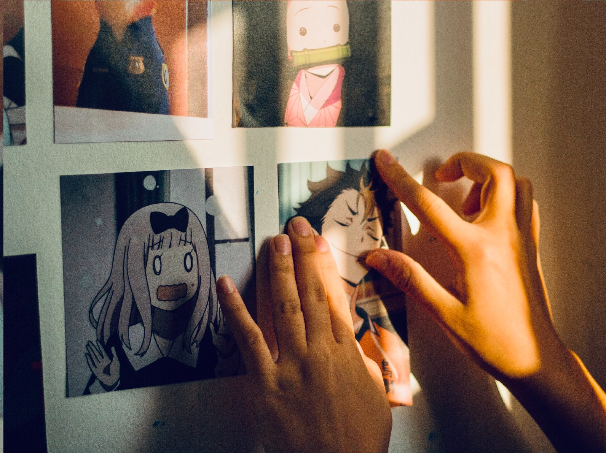
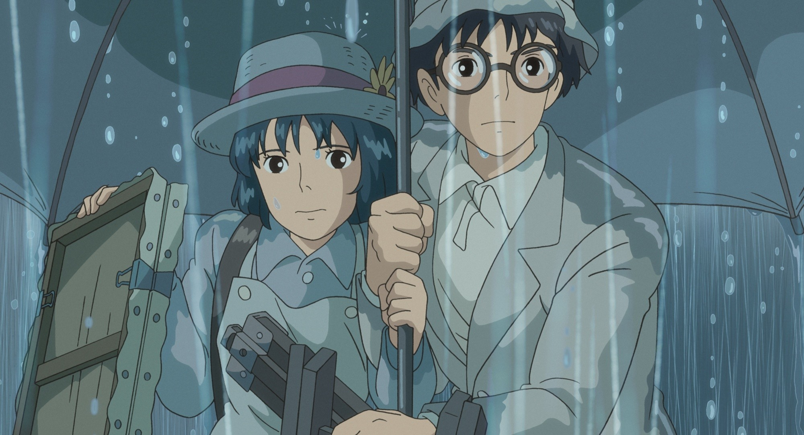

Apa Itu Anime ?
ditulis oleh Lisvindanu. pada 8 november 2022
Anime adalah animasi buatan Jepang, yang kini berkembang menjadi bentuk budaya populer, dengan basis penggemar yang cukup banyak. Anime tidak hanya dipandang sebagai sarana hiburan semata, sebagian besar orang bahkan menganggap kartun tersebut sebagai tontonan hari-hari, lantaran cerita kerap menginspirasi.
Meskipun dikategorikan sebagai kartun, anime sangat berbeda dengan serial animasi buatan Amerika atau negara lainnya. Selain punya ciri khas pada desain karakternya, cerita yang disajikan dari anime sangat beragam. Anda bisa menemukan beberapa judul anime dengan alur cerita kelam dan berat untuk dicerna. Oleh karena itu, ada sejumlah anime yang memang dikategorikan bagi penonton dewasa.
Pengertian Anime
Secara bahasa, pengertian anime adalah sebutan orang Jepang untuk animasi. Animasi di sini bisa merujuk pada animasi yang dibuat oleh tangan secara manual maupun menggunakan teknologi komputer. Menurut situs Kotaku.com.
Dalam bahasa Jepang anime ditulis sebagai “アニメ” (secara harfiah berarti anime), dan merupakan kependekan dari kata animasi atau animeshon. Istilah anime saat ini mulai meluas maknanya, karena tidak hanya mewakili produksi animasi dari Jepang saja.
Serial anime yang diproduksi sampai saat ini, jumlahnya sudah mencapai ribuan. Menurut survei seperti dikutip dari Encyclopedia Japan, lebih dari 6.000 judul anime diproduksi, dan lebih dari 3.200 judul anime ditayangkan di televisi.
Bahkan, ada sumber yang menyebutkan sekitar 60 % dari semua animasi yang disiarkan di dunia dibuat di Jepang. Dari penjelasan di atas, singkatnya anime tidak hanya menjadi kartun yang diproduksi. Lebih dari itu, anime telah menjadi industri yang di dalamnya memuat banyak hal. Khususnya unsur-unsur budaya populer Jepang seperti musik, manga, dan sebagainya.
Sebagai industri, produksi anime ternyata memakan biaya yang sangat besar. Dikutip dari Anime News Network, rata-rata untuk 13 episode musim anime berharga 250 juta yen atau US$ 2 juta.
Sejarah Singkat Anime
Sebelum menjadi salah satu sektor industri di Jepang, awalnya anime hanyalah sarana yang digunakan para seniman Jepang untuk bereksperimen dengan teknik animasi. Sejarah mencatat, anime mulai berkembang di Negeri Sakura pada akhir abad ke-19 dan awal abad ke-20.
Melansir Japanjunky, anime Jepang pertama dalam bentuk paling dasar, diperkirakan telah dibuat pada tahun 1906, tetapi legitimasi klaim itu banyak diperdebatkan oleh beberapa orang.
Banyak orang percaya animasi Jepang paling awal disebut Katsudo Shashin, sebuah karya pribadi tak bertanggal oleh pencipta yang juga tidak dikenal.
Kemudian pada tahun 1917, karya profesional dan publik pertama mulai muncul. Animator seperti Oten Shimokawa dan Seitarou Kitayama menghasilkan banyak karya, termasuk salah satu film animasi Jepang tertua berjudul Kouchi's Namakura Gatana. Film ini hanya berbentuk klip, dengan durasi dua menit yang mengisahkan seorang samurai yang mencoba menguji pedang baru.
Pada masa-masa tersebut pembuatan animasi tradisional di Jepang mulai berkembang. Akan tetapi seperti dilansir dari Nippon.com, Tokyo dan daerah sekitarnya mengalami kerusakan besar akibat gempa besar Kanto pada tahun 1923 yang mengakibatkan industri anime di Jepang dipaksa untuk memulai lagi dari awal.
Seiring berjalannya waktu industri anime Jepang mulai bangkit. Terutama setelah keberhasilan dari Walt Disney yaitu Snow White and The Seven Dwarfs sangat memengaruhi banyak animator Jepang.
Kemudian pada 1960-an, seniman manga dan animator Osamu Tezuka membawa banyak teknik animasi Disney lalu menyederhanakannya. Dia sengaja melakukan ini untuk mengurangi biaya dan membatasi jumlah bingkai dalam film animasi. Sebelum era 60-an, pembuatan anime masih menggunakan teknik produksi animasi cel gaya Jepang.
Beberapa studio animasi terkemuka di Jepang kemudian mulai didirikan, misalnya pada tahun 1961 berdiri Mushi Productions oleh Osamu Tezuka. Lalu pada serial anime pertama berjudul Astro Boy (Tetsuwan Atomu) karya Osamu Tezuka ditayangkan perdana di stasiun Jepang pada 1 Januari 1963. Berkat karyanya ini, Osamu Tezuka mendapatkan julukan “God of Manga” atau Dewa Manga.
Memasuki tahun 1970-an, di Jepang pertumbuhan popularitas manga dan novel grafis mengalami lonjakan pesat, banyak di antaranya kemudian dianimasikan. Sedangkan pada masa 1980-an, beberapa genre anime paling populer seperti anime mecha diciptakan selama waktu ini. Bisa dibilang saat itu tema robot raksasa sangat umum sekali.
Produksi anime kian berkembang pesat setiap tahunnya. Bahkan sejak awal tahun 1990, banyak sekali judul anime ikonik yang membekas di hati penggemarnya.
Di awal abad ke-21, anime bergenre shounen mulai mendapatkan tempatnya. Sebut saja seperti One Piece dan Naruto yang sampai saat ini masih memiliki banyak penggemar setia di seluruh dunia.
Tidak hanya serial anime, film anime perlahan mulai mendapat pengakuan internasional. Khususnya film anime yang diproduksi oleh Studio Ghibli. Pada 2002, film anime berjudul Spirited Away yang disutradarai oleh Hayao Miyazaki memenangkan the Golden Bear di Festival Film Internasional Berlin, dan pada 2003 di Academy Awards ke-75, film tersebut memenangkan Academy Award untuk kategori Best Animated Feature.
Perkembangan Anime Hingga Saat Ini

Sejak stasiun TVRI menayangkan anime pertama di Indonesia berjudul Wanpaku Omukashi Kum Kum sekitar tahun 1970-an, popularitas serial animasi Jepang semakin meningkat. Sejak saat itu, ada beberapa judul anime populer yang ditayangkan di stasiun televisi Tanah Air.
Saat ini penggemar anime di berbagai belahan dunia dapat menonton anime favoritnya melalui sejumlah platform seperti Netflix atau kanal Youtube dengan lisensi resmi misalnya Muse Indonesia.
Genre anime pun kian beragam setiap waktunya. Mulai dari anime yang mengangkat kisah petualangan dengan aksi memukau, sampai anime bertemakan isekai (dunia lain).
Demikian Pembahasan Tentang Anime Yang Menarik Untuk Diketahui
source
Klik disini